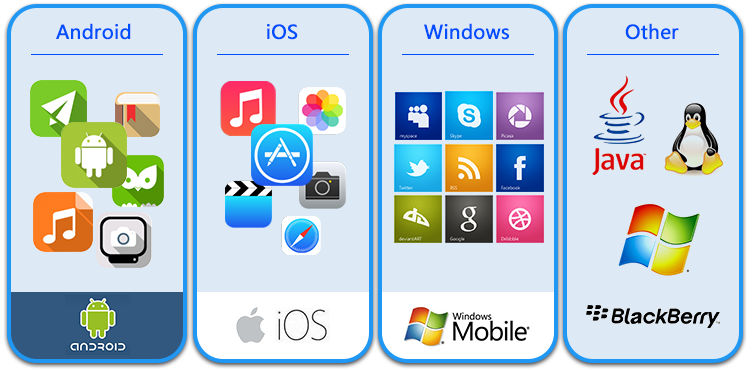

CSLG IT laboratory
移动应用源代码加固
未经混淆的源代码受到攻击后，易暴露程序中关键算法、核心业务逻辑、数据结构和模块的控制流布局等敏感内容
| 主要功能:
鉴于源代码的超低风险抵抗能力，梆梆安全推出了了面向Android ndk工程、Android gradle工程、iOS工程的源代码安全保护系统。插入各种花指令：插入各种不会被执行的无效字节码到源码文件中，使逆向分析工具进行字节码解析时崩溃。
控制流变换：对于跳转控制条件和分支语句，在保持原程序逻辑关系的前提下，随机确定控制块的执行顺序，达到模糊程序控制逻辑、隐藏程序控制流的目的。
控制流平坦化：在保证不改变源代码功能的前提下，将C、C++、Objective-C等语言中的if、while、for、do等控制语句转化为switch分支选择语句。
代码完整性校验: 在混淆源码时植入check因子，在程序执行时校验同因子映射对应的代码，保证代码执行时的完整性。
| 系统特点:
部署灵活：采用软件、硬件集成部署方式，由梆梆安全提供硬件设备，部署后即可正常使用。混淆复杂度高：由平坦控制流算法混淆后的程序，比未经混淆的原程序的控制流复杂性大幅提高，更难以被逆向分析和动态调试破解。
系统开销低：系统混淆增量少，对原程序执行开销无影响。
源对源的混淆机制: 支持混淆后代码调试，查看定位分析问题。避免无法得到混淆后代码的情况，解决出现问题定位定位难的问题。
不透明谓词技术: 实现动态分支间逻辑跳转，从源头对抗静态代码分析，增大调试难度。 
效果和优势:
- 交付方式灵活，源代码加固系统可以独立部署在企业私有云系统内部，也可以采用公有云的方式提交源码获取加固文件。
- 获得国内外众多知名金融服务机构认可的移动安全技术方案。
- 安全效果显著，已经在金融、票务、电子商务等多个领域内的大型企业上应用，很好的对源代码的业务层进行了保护。
cslgit©2016 Bootstrap 响应式网络安全服务 | 版权所有️